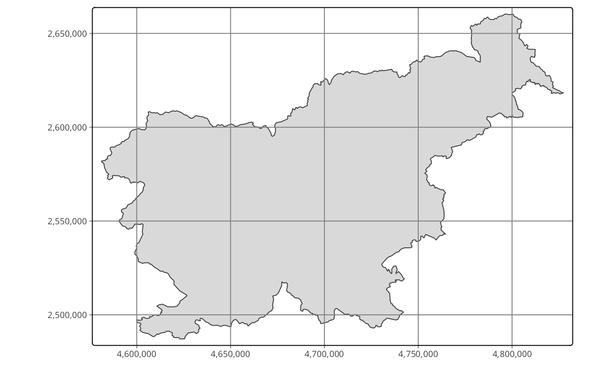
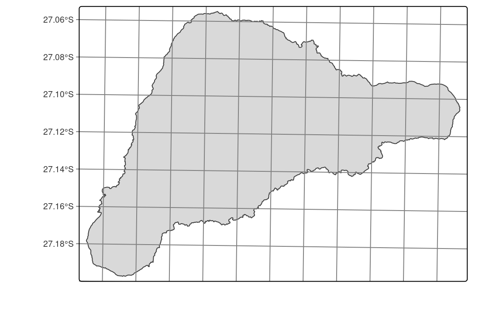
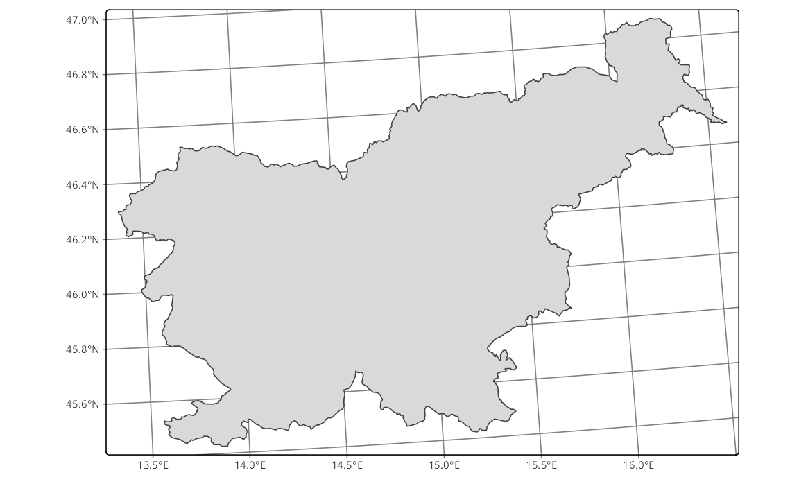
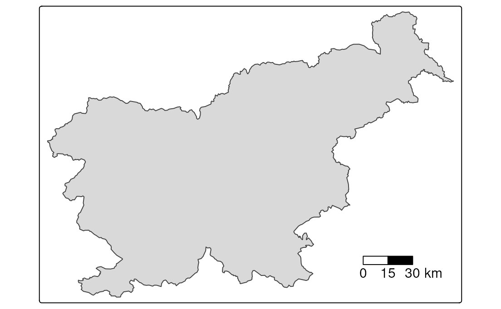
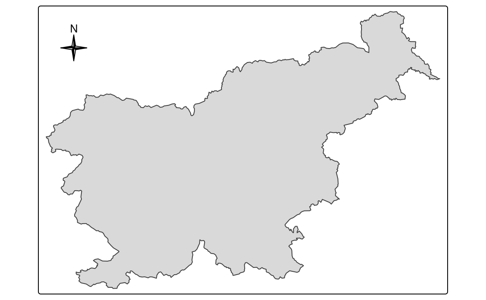
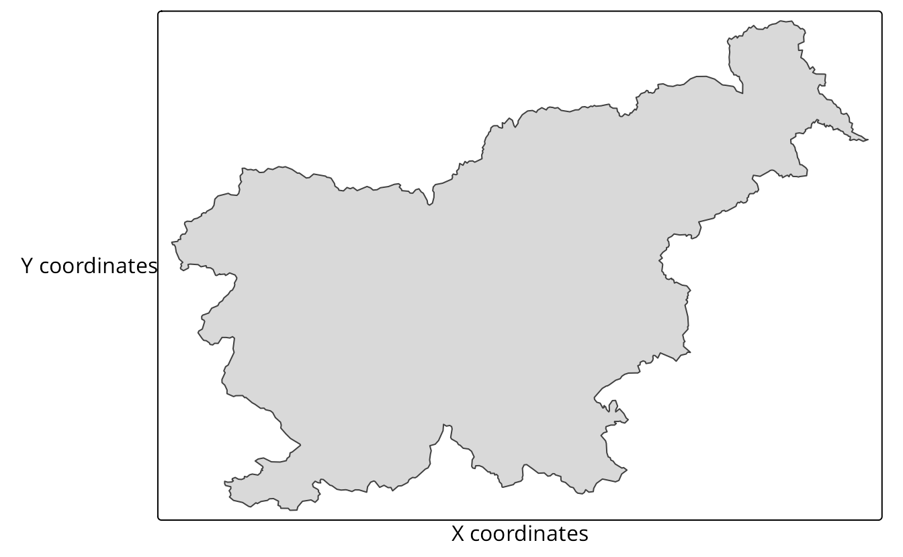
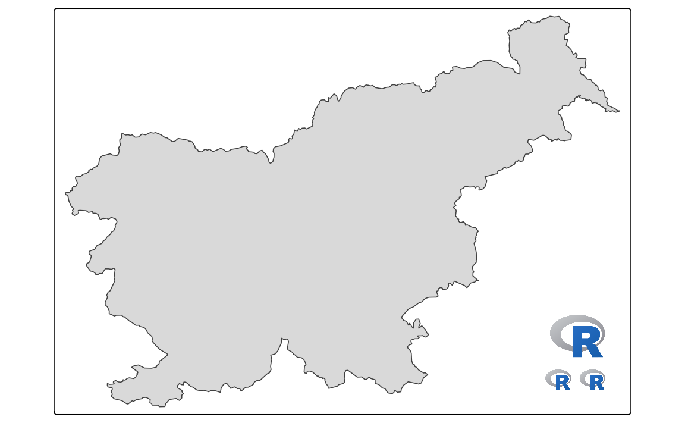
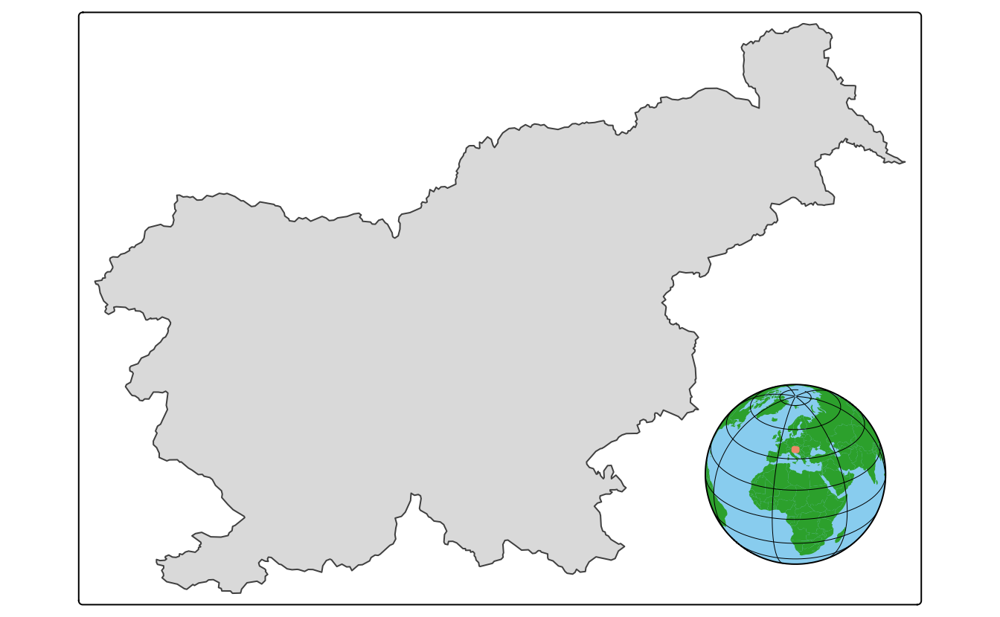

| Function | Description |
|---|---|
| tm_grid() | draws coordinate grid lines of the coordinate system of the main shape object |
| tm_graticules() | draws latitude and longitude graticules |
| tm_scalebar() | adds a scale bar |
| tm_compass() | adds a compass rose (north arrow) |
| tm_credits() | adds a text annotation |
| tm_xlab() | adds an x axis labels |
| tm_ylab() | adds an y axis labels |
| tm_logo() | adds a logo |
| tm_minimap() | adds minimap |
10 Map components
Map components are visual elements that are not directly related to the data-driven map layers while providing additional information or context to the map. They are not tied to the map’s coordinates but rather to the map’s layout and design. Table 10.1 shows the list of available map components in tmap. It includes functions that draw coordinate grid lines, latitude and longitude graticules, scale bars, north arrows, text annotations, logos, axis labels, and minimaps. We cover and demonstrate these functions in the following sections.
For the examples in this section, we will use a simple map of the Slovenia polygon (not shown).
10.1 Grid lines
The tmap package offers two ways to draws coordinate lines - tm_grid() and tm_graticules(). The role of tm_grid() is to represent the input data’s coordinates. For example, the slo_borders object’s CRS is ETRS89-extended / LAEA Europe with the units in meters (Figure 10.1 (a)), and thus the grid lines are in meters.
tm_shape(slo_borders) +
tm_polygons() +
tm_grid()tm_graticules() shows longitude lines (meridians) and latitude lines (parallels), with degrees as units. This can be seen with the degree signs in the labels (Figure 10.1 (b)).
tm_shape(slo_borders) +
tm_polygons() +
tm_graticules()Both, tm_grid() and tm_graticules() can be placed above or below the map layers as their position on the map depends on their place in the code. When tm_grid() or tm_graticules() is placed after the map layer (e.g., tm_polygons()), the grid lines are plotted on the top of the map. On the other hand, when tm_grid() or tm_graticules() is placed before the map layer code, the grid lines are plotted behind the spatial data (Figure 10.1 (c)).
tm_shape(slo_borders) +
tm_graticules() +
tm_polygons()Grids and graticules can also be easily customized using several arguments, such as, x and y (x and y coordinates of the lines), n.x and n.y (number of horizontal (x) and vertical (y) lines), labels.inside.frame, ticks, lines It is also possible to customize their appearance, for example, by changing the colors of the lines (col), width (lwd) or labels’ sizes (labels.size).



10.2 Scale bar
Scale bar is a graphic indicator of the relation between a distance on a map and the corresponding distance in the real world. Nowadays, it is more often used than a traditional representative fraction (e.g., 1:10000). Compared to the representative fraction, scale bars work correctly on variable screen sizes or different print sizes, as their sizes change together with the rest of the map.
The tm_scalebar() function adds a scale bar. It is possible, however, to manually update the values of scale bar’s breaks with the breaks argument and its size with the text.size argument (Figure 10.2).
tm +
tm_scalebar(breaks = c(0, 15, 30), text.size = 1)

The tm_scalebar() also has several additional arguments, allowing to modify its colors and position.
Importantly, the scale bar is accurate, depending on a map projection, at standard points or lines only (Section 13.4) – it is never completely correct across the whole map. The scale bar distortion increases with the true size of the area we are mapping – it is less visible on local maps, and very prominent on global maps. For example, try to add a scale bar to a world map seen in the Section 5.1. The created scale bar will be accurate for the equator, but less and less correct going to the north and south poles.
10.3 North arrow
North arrow, also known as a map compass or a compass rose, is a prominent orientation indicator pointing to which way is north1. The decision on whether to use north arrows or not usually requires some critical thinking. While, it can be added to every map, north arrows are not always necessary – especially on maps of large areas (e.g., continents), where the cardinal directions are obvious for most people. The north arrow is, however, necessary when the north on the map is offset (rotated) and recommended when we want to help orient the map readers.
We can use the tm_compass() function to add the north arrow (Figure 10.3). By default, its north is oriented toward the top of the map (the north argument of 0), and the north arrow is represented by an actual arrow (the type argument of "arrow").
tm +
tm_compass(type = "4star", size = 2, position = c("left", "top"))

tmap offers also a few other north arrow types, including "arrow", "4star", "8star", "radar", and "rose" (Figure 10.4). The north arrow can be also further customized with the size, show.labels and cardinal.directions arguments, and its colors may be modified (text.color, color.dark, color.light) (Figure 10.3). The location of the north arrow, by default, is placed automatically, but can also be changed using the position argument.
The position argument also works in the same way in other functions, such as tm_scalebar(), tm_credits(), tm_logo(), and in some of the tm_layout() arguments: legend.position, title.position, or chart.position.
10.4 Text annotation
Text annotations, also known as map credits, are used to store additional information about the created map. They can include the source of data, the name of the author, the date of map creation, or information about the map projection. Text annotations are created with the tm_credits() function, which can be used more than one time (Figure 10.5).
tm +
tm_credits("Data source: ", fontface = "italic") +
tm_credits("Author: ", fontface = "bold")
The first argument of tm_credits() is the text, which can be spread over multiple lines with the line break symbol \n. When the created map has several facets (Chapter 16), it is also possible to provide each facet a different text. In that case, a vector of characters is expected, where you can use "" to omit the credits for specific facets. Text annotations can also be further customized, by changing their sizes (size), colors (color), positions, and fonts (Section 12.3.3).
10.5 Axis labels
The tm_xlab() and tm_ylab() functions add x and y axis labels to the map. These labels can be used to describe the coordinates of the map, such as longitude and latitude, or faceting variables (Section 16.4).

By default, the x and y-axis labels are placed at the bottom and left sides of the map, respectively, in a horizontal orientation. The additional arguments of these functions allow to change the labels’ size, color, rotation, space between the labels and the map, and their side.
10.6 Logo
Logos on maps can serve a similar purpose as text annotation or accompany them. They can represent your affiliation, funding institution, data sources logos, etc. The tm_logo() function adds png images, either from a file or url, to the map (Figure 10.7).
tm +
tm_logo("https://www.r-project.org/logo/Rlogo.png",
height = 2) +
tm_logo(c("https://www.r-project.org/logo/Rlogo.png",
"https://www.r-project.org/logo/Rlogo.png"),
height = 1)

There are two ways to use multiple logos. Many tm_logo() functions will places logos on top of each other, while providing a vector of png files will show them next to each other. Additional arguments include the height of the logo (height, the width is scaled automatically) and its position (position).
10.7 Minimap
The minimap is a small overview map that shows the extent of the main map within a larger context. The tm_minimap() function adds a minimap of a globe to the main map, as illustrated in Figure 10.8.
tm +
tm_minimap()

The tm_minimap() function is simple and straightforward, but does not offer too many customization options. If you want to create a more advanced minimap, you can use the tm_inset() function, which is described in Section 15.1.
Orientation may also be shown by graticule or grid lines (Section 10.1).↩︎